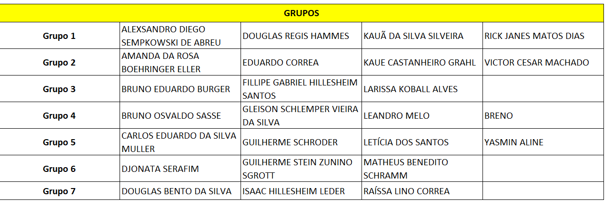
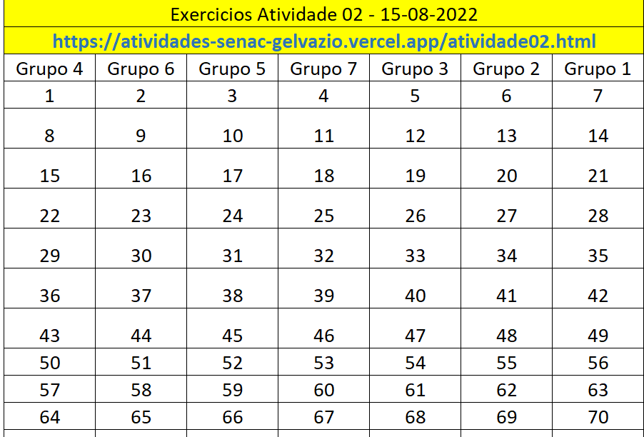

INSTRUCOES:
- A atividade deverá ser entregue de forma INDIVIDUAL, porem com ajuda dos grupos formados.
- As respostas das questões devem ser entregues através do github
- Você deve utilizar a linguagem JAVA para resolver as questões.
- Data de Entrega: 15/08/2022
-
Cada aluno será sorteado com um número
e deverá explicar aleatoriamente 3 questões dentre as apresentadas abaixo,
que são referentes ao número sorteado.
-
Crie um "package" de nome "atividade02"
GRUPOS


LISTA DE EXERCICIOS CONDICIONAIS
-
Faça um algoritmo que leia os valores A, B, C e imprima na tela se a soma de A + B é menor que C.
-
Faça um algoritmo que leia o nome, o sexo("F" ou "M") e o estado civil de uma pessoa.
Caso sexo seja “F” e estado civil seja “CASADA”, solicitar o tempo de casada (anos).
Ao final do algoritmo imprima os dados lidos.
-
Faça um algoritmo para receber um número qualquer e informar na tela se é par ou ímpar.
-
Faça um algoritmo que leia dois valores inteiros A e B, e se os valores forem iguais deverá se somar os dois, caso contrário multiplique A por B. Ao final de qualquer um dos cálculos deve-se atribuir o resultado para uma variável C e mostrar seu conteúdo
na tela.
-
Encontrar o dobro de um número caso ele seja positivo e o seu triplo caso seja negativo, imprimindo o resultado.
-
Escreva um algoritmo que lê dois valores booleanos (lógicos) e então determina se ambos são VERDADEIROS ou FALSOS.Obs:Faça uma pergunta por exemplo:Você é maior de idade?Responda SIM ou NAO. Atribua o valor conforme o caso e no final mostre a resposta:
A pessoa é maior de idade, se a resposta for SIM A pessoa é menor de idade, se a resposta for NAO
-
Faça um algoritmo que leia uma variável e some 5 caso seja par ou some 8 caso seja ímpar, imprimir o resultado desta operação.
-
Escreva um algoritmo que leia três valores inteiros e diferentes e mostre-os em ordem decrescente.
-
Escreva um algoritmo que leia três valores inteiros e diferentes e mostre-os em ordem crescente.
- Tendo como dados de entrada a altura e o sexo de uma pessoa, construa um algoritmo que calcule seu peso ideal, utilizando as seguintes fórmulas:
-
para homens: (72.7 * h) – 58;
-
para mulheres: (62.1 * h) – 44.7.
Ao final do mesmo, informe se a pessoa tem peso ideal ou não.
-
O IMC – Indice de Massa Corporal é um critério da Organização Mundial de Saúde para dar umaindicação sobre a condição de peso de uma pessoa adulta. A fórmula é IMC = peso / ( altura )2 Elabore um algoritmo que leia o peso e a altura de um adulto e mostre
sua condição de acordo com a tabela abaixo. IMC em adultos Condição Abaixo de 18,5 Abaixo do peso Entre 18,5 e 25 Peso normal Entre 25 e 30 Acima do peso Acima de 30 obeso
-
Faca um algoritmo que leia o nome e as tres notas de um aluno e ao final, escreva o seu nome, sua media e se ele foi aprovado. Media de aprovacao igual a 8.
-
Faca um algoritmo que leia tres numeros digitados, e os coloque em ordem crescente.
-
Faca um algoritmo que leia o menor numero de tres digitados.
-
Faca um algoritmo que leia o maior numero de tres digitados.
-
Faca um algoritmo que leia o numero intermediario de tres digitados.
-
Faca um algoritmo que leia o maior, o menor e o intermediario de tres numeros digitados.
-
Faca um algoritmo que leia um numero e apos imprima o numero lido, o seu antecessor e o seu sucessor na tela;
-
Conta telefônica - Uma conta telefônica é composta dos seguintes custos: assinatura: R$ 17,90 impulsos: R$ 0,04 por impulso que exceder a 90 interurbanos chamadas p/ celular: R$0,20 por impulso Monte a fórmula para calcular o valor da conta para 254 impulsos,
R$34,29 de interurbanos e 23 chamadas para celular. Elabore um programa que mostra os custos, calcula e mostra o valor total.
-
Uma pessoa com pouco tempo disponível lê um livro por 5 minutos a cada dia, 6 dias por semana. Monte a fórmula e escreva um programa que calcula e mostra na tela quanto tempo, em horas, a pessoa terá dedicado ao livro ao final de um ano.
-
Vou e volto diariamente a pé para o trabalho, que dista aproximadamente 800 m de minha casa. Supondo que trabalho 5 dias por semana, 45 semanas por ano, "bole" a operação matemática que deve ser efetuada para calcular quantos quilômetros, aproximadamente,
terei andado ao final de um ano. Elabore um programa que faça as contas e mostre o resultado
-
Faça um algoritmo para verificar se um aluno esta APROVADO ou REPROVADO, lendo 3 notas e calculando sua media que deve ser maior ou igual a 7.
-
Faça um algoritmo para verificar se uma pessoa ja pode tirar carteira de motorista considerando a idade >= 18 anos e mostre na tela uma mensagem: JA POSSO TIRAR A CARTEIRA DE MOTORISTA, se for o caso AINDA NÃO POSSO TIRAR A CARTEIRA DE MOTORISTA, se for
o caso
-
Faça um algoritmo para verificar se uma pessoa ja atingiu a maioridade. algoritmo deve receber como entrada apenas o ano de nascimento e considerar o ano atual para calculo e 18 anos para maioridade.
-
Faça um algoritmo para verificar se um valor e PAR ou IMPAR;
-
Faça um algoritmo para calcular o Indice de Massa Corporal de uma pessoa, considerando a seguinte formula: IMC = PESO / (ALTURA AO QUADRADO) Se a pessoa tiver IMC MENOR OU IGUAL A 18.5, mostre a mensagem abaixo: "Parabens! Voce esta no seu peso ideal"
Senão mostre a mensagem abaixo: "Voce nao esta na faixa de peso ideal"
-
Um estudante muito metódico estava matriculado em 6 disciplinas, e dispunha de 1 hora e 40 minutos para estudar. Sua intenção era dividir o tempo disponível igualmente para as 6 disciplinas, e descansar livremente o tempo restante. Faça um programa que
calcule o tempo que ele deve dedicar para cada disciplina e o tempo livre.
-
Determine a velocidade de um automovel que percorreu uma distancia S em km, * em um intervalo de tempo T,informando em horas.
-
Faça um algoritmo que leia dois numeros inteiros (n1 e n2) * calcule a divisão de n1/n2, e informe o resto desta divisão. * Não pode ser usado funções pre-programadas(mod em VisualG e %).
-
Faça um algoritmo para ler uma temperatura em graus Celsius, e transforme * para graus Farenheidt e Kelvin. * OBS: * C = 5 (F - 32)/9; * K = C + 273;
-
Desenvolva um algoritmo para identificar se um determinado numero inteiro, * é positivo,negativo,ou nulo.
-
Calcule o salario do mes de um funcionario. * O funcionario ganha 3000, mais 500 reais por carro vendido, * mais 5% do valor total de cada carro vendido. * Quanto o funcionario ganha ao fim do mes?
-
Fornecido os coeficientes de uma equação do 2 grau,(a,b,c - ler do teclado) * faça um algoritmo que calcule as raizes se houverem * Validar se o numero e negativo, pois não existe raiz de numero negativo!
-
Suponha que voce foi ao supermercado e comprou:
n Kg de café á x reais;
k litros de leite á y reais;
m Kg de farinha a z reais;
Faça um algoritmo que imprima o ticket de compra.
Primeiro produto: R$ 0,00
Segundo produto: R$ 0,00
-
Faça um algoritmo que receba do usuario o raio em cm e calcule o volume de uma esfera.
Formula:
VOLUME = 4 * PI * R ao cubo.
-
Escrever um programa que lê dois números e efetua uma divisão,
mas somente se o divisor for diferente de zero; quando isto ocorrer, é mostrada uma mensagem de erro apropriada.
-
Em um triângulo, cada lado é menor do que a soma dos outros dois.
Escreva um programa que lê três valores e informa se estes não podem constituir um triângulo ou,
caso contrário, se o triângulo formado é equilátero (três lados iguais), isósceles (dois lados iguais)
ou escaleno (lados diferentes).
-
Um salário tem os seguintes componentes: - valor nominal - adicional devido a horas extras - valor descontado
para o INSS (10% do valor a receber, limitado a 150 reais). O valor adicional devido às horas extras é
calculado dividindo-se o valor nominal
por 176 (22 dias de 8 horas), multiplicando-se pela quantidade de horas e ainda com um acréscimo de 50%.
Escrever um programa que lê os valores necessários, calcula e mostra na tela os componentes do salário e
o salário líquido
resultante para o empregado.
Não é preciso prever arredondamentos, mas os valores devem ser mostrados na tela com duas casas decimais.
Exemplos: para um salário de R$ 1.000,00, com 30 horas extras, teremos R$ 255,68 de horas extras
[(1.000/176)*30*1,5], R$ 125,57 de INSS e um salário líquido de R$ 1.130,11.
Para um salário de R$ 2.000,00 e 20 horas extras, seriam R$ 340,91 de horas extras,
R$ 150,00 de INSS (e não os 10%), com um salário líquido de R$ 2.190,91.
-
Construa um programa que lê um número de 1 a 7 e informa o dia da semana correspondente,
sendo domingo o dia de número 1. Se o número não corresponder a um dia da semana, é mostrada uma mensagem de erro.
- Crie um algoritmo que leia um número inteiro do usuário e verifique se o número está entre 100 e 200. Se o número não estiver nesse intervalo, deve ser exibida a mensagem “O número está fora do intervalo”. Caso contrário mostre a mensagem
“O número está dentro do intervalo”.
- Crie um algoritmo que leia um número inteiro do usuário e informe se esse número é ou não é múltiplo de 3.
- Crie um algoritmo que leia um número inteiro do usuário e informe se esse número é ou não é múltiplo de 4.
- Crie um algoritmo que peça ao usuário para adivinhar para qual time você torce. Caso ele acerte, escreva a mensagem: “Você acertou! Meu eu torço para esse time”. Caso contrário, escreva a mensagem “Você errou”.
- Crie um algoritmo que leia um número inteiro do usuário e informe se o valor lido é maior do que 10. Caso seja, informe o valor da subtração de 10 pelo número lido. Caso contrário escreva a mensagem dizendo que o número não é maior do que
10.
- Crie um algoritmo que leia um número inteiro do usuário e informe se esse número é ou não é múltiplo de 5.
- Crie um algoritmo que peça ao usuário para responder a pergunta: “Qual país colonizou o Brasil?” Caso ele responda Portugal, escreva a mensagem: “Você acertou! Parabéns!”. Caso contrário, escreva a mensagem “Você errou. Que pena”.
- Crie um algoritmo que peça ao usuário para adivinhar a última letra do seu nome. Caso ele digite a letra correta, escreva a mensagem: “Você acertou! Meu nome termina comessa letra”. Caso contrário, escreva a mensagem “Você errou”.
- Crie um algoritmo que peça ao usuário para adivinhar a primeira letra do seu nome. Caso ele digite a letra correta, escreva a mensagem: “Você acertou! Meu nome começa com essa letra”. Caso contrário, escreva a mensagem “Você errou”.
- Crie um algoritmo que leia um número inteiro do usuário e informe se o valor lido é menor do que 50. Caso seja, informe a mensagem “O número é menor do que 50”. Caso contrário escreva a mensagem dizendo que o número não é menor do que 50.
- Crie um algoritmo que peça ao usuário para responder a pergunta: “Quantos títulos mundiais o Brasil ganhou no futebol?” Caso ele digite o valor 5, escreva a mensagem: “Você acertou! Parabéns!”. Caso contrário, escreva a mensagem “Você errou.
Que pena!”.
- Crie um algoritmo que leia um número inteiro do usuário e verifique se o número está entre 1 e 100. Se o número não estiver nesse intervalo, deve ser exibida a mensagem “O número está fora do intervalo”. Caso contrário mostre a mensagem “O
número está dentro do intervalo”
-
Desenvolver um algoritmo que efetue a soma de todos os números ímpares que são múltiplos
de três e que se encontram no conjunto dos números de 1 até 500.
LISTA DE EXERCICIOS REPETICAO
- Escreva um algoritmo que imprima todos os números inteiros de 0 a 50.
-
Escreva um algoritmo que imprima todos os números inteiros do intervalo fechado de 1 a 100.
-
Escreva um algoritmo que imprima todos os números inteiros de 100 a 1 (em ordem decrescente).
- Escreva um algoritmo que imprima todos os números inteiros de 100 a 200.
- Escreva um algoritmo que imprima todos os números inteiros de 200 a 100 (em ordem decrescente)
- Escreva um algoritmo que imprima todos os números múltiplos de 5, no intervalo fechado de 1 a 500.
- Escreva um algoritmo que imprima todos os números pares do intervalo fechado de 1 a 100.
- Escreva um algoritmo que imprima os 100 primeiros números ímpares.
- Escreva um algoritmo que imprima o quadrado dos números no intervalo fechado de 1 a 20.
- Escreva um algoritmo que imprima todos os números ímpares do intervalo fechado de 1 a 100.
- Escreva um algoritmo que receba dez números do usuário e imprima a metade de cada número.
- Escreva um algoritmo que receba dez números do usuário e imprima o quadrado de cada número.
- Escreva um algoritmo que receba dez números do usuário e imprima o cubo de cada número.
- Escreva um algoritmo que receba quinze números do usuário e imprima a raiz quadrada de cada número.
- Escreva um algoritmo que receba oito números do usuário e imprima o logaritmo de cada um deles na base 10.
- Criar um algoritmo que imprima todos os números de 1 até 100, inclusive, e a soma de todos eles.
- Criar um algoritmo que imprima todos os números de 1 até 100, inclusive, e a soma do quadrado desses números.
- Criar um algoritmo que imprima todos os números de 1 até 100, inclusive, e a soma da metade desses números.
- Criar um algoritmo que imprima todos os números de 1 até 100, inclusive, e a soma do cubo desses números.
- Criar um algoritmo que imprima todos os números de 1 até 100, inclusive, e a média de todos eles.
- Criar um algoritmo que leia um número (NUM) e depois leia NUM números inteiros e imprima o maior deles.
Suponha que todos os números lidos serão positivos.
- Criar um algoritmo que leia um número (NUM) e depois leia NUM números inteiros e imprima o maior deles.
- Criar um algoritmo que leia um número (NUM) e depois leia NUM números inteiros e imprima o menor deles.
- Criar um algoritmo que leia dez números inteiros e imprima o maior e o menor número da lista.
- Criar um algoritmo que leia dez números inteiros e imprima o maior e o segundo maior número da lista.
- Criar um algoritmo que leia os limites inferior e superior de um intervalo e imprima
todos os números pares no intervalo aberto e seu somatório. Suponha que os dados digitados
são para um intervalo crescente, ou seja, o primeiro valor
é menor que o segundo.
- Criar um algoritmo que leia um número (NUM) e então imprima os múltiplos de 3 e 5, ao mesmo tempo, no intervalo fechado de 1 a NUM. 28
- Escreva um algoritmo que leia 200 números inteiros e imprima quantos são pares e quantos são ímpares.
- Escreva um algoritmo que receba 15 números e imprima quantos números maiores que 30 foram digitados.
- Escreva um algoritmo que leia 20 números e imprima a soma dos positivos e o total de números negativos.
- Escreva um algoritmo que realize o produto de A (número real) por B (número inteiro) ou seja, A * B, através de adições (somas) Esses dois valores são passados pelo usuário através do teclado.
- Escreva um algoritmo que realize a potência de A (número real) por B (número inteiro e positivo) ou seja, AB , através de multiplicações sucessivas. Esses dois valores são passados pelo usuário através do teclado.
- Escreva um algoritmo que calcule o resto da divisão de A por B (número inteiros e positivos) ou seja, A mod B, através de subtrações sucessivas. Esses dois valores são passados pelo usuário através do teclado.
- Escreva um algoritmo que calcule o quociente da divisão de A por B (número inteiros e positivos) ou seja, A div B, através de subtrações sucessivas. Esses dois valores são passados pelo usuário através do teclado.
- Escreva um algoritmo que determine se dois valores inteiros e positivos A e B são primos entre si. (dois números inteiros são ditos primos entre si, caso não exista divisor comum aos dois números.
- Escreva um algoritmo para calcular o fatorial do número N, cujo valor é obtido através do usuário pelo teclado.
- Escreva um algoritmo que determine todos os divisores de um dado número N.
- Escreva um algoritmo que determine se um dado número N (digitado pelo usuário) é primo ou não.
- Escreva um algoritmo que calcule os N-menores números primos. Este número N deve ser lido do teclado.
- Escreva um algoritmo que calcule o m.d.c. (máximo divisor comum) entre A e B (número inteiros e positivos
- Esses dois valores são passados pelo usuário através do teclado.
- A série de Fibonacci é formada pela seqüência: 1, 1, 2, 3, 5, 8, 13, 21, 34, 55, ...
Escreva um algoritmo que gere a série de FIBONACCI até o Nésimo termo.
- A série de RICCI difere da série de FIBONACCI porque os dois primeiros termos são fornecidos pelo usuário.
Os demais termos são gerados da mesma forma que a série de FIBONACCI.
Criar um algoritmo que imprima os N primeiros termos da série de RICCI e a soma dos termos impressos, sabendo-se que para existir esta série serão necessários pelo menos três termos. 43
- A série de FETUCCINE é gerada da seguinte forma: os dois primeiros termos são fornecidos pelo usuário;
a partir daí, os termos são gerados com a soma ou subtração dos dois termos anteriores,
ou seja: para i par para i ímpar 1 2 1 2 − − − − = − = + i i i i i i A A A A A A
Criar um algoritmo que imprima os N primeiros termos da série de FETUCCINE,
sabendo-se que para existir esta série serão necessários pelo menos três termos.
- Seja a seguinte série: 1, 4, 9, 16, 25, 36, ... Escreva um algoritmo que gere esta série até o N-ésimo termo.
Este N-ésimo termo é digitado pelo usuário.
- Seja a seguinte série: 1, 4, 4, 2, 5, 5, 3, 6, 6, 4, 7, 7, ...
Escreva um algoritmo que seja capaz de gerar os N termos dessa série. Esse número N deve ser lido do teclado.
- Sendo H = 1 + 2 1 + 3 1 + 4 1 + ... N 1 , faça um algoritmo para gerar o número H. O número N é lido do teclado.
- Sendo H = 1 - 2 1 + 3 1 - 4 1 + ... N 1 , faça um algoritmo para gerar o número H. O número N é lido do teclado.
- Faça um algoritmo para calcular o valor de S, dado por: 2 1 1 2 3 1 1 2 N N N N N S + − + + − + − = + K
sendo N fornecido pelo teclado.
- Sendo S = 1 + 2 2 1 + 3 3 1 + 4 4 1 + 5 5 1 + ... + N N 1 , um somatório de N (definido pelo usuário) termos,
escreva algoritmo para calcular S para um número N.
- NAO FAZER!!!Faça um algoritmo que: - leia um número real X do teclado;
determine e imprima o seguinte somatório:
= − + − + +L 1! 2! 3! 4! X X X X S X usando os 20 primeiros termos da série.
- O valor aproximado do número π pode ser calculado usando-se a série 3 3 3 3 L 9 1 7 1 5 1 3 1 S = 1− + − + sendo 3 π = S × 32 .
Faça um algoritmo que calcule e imprima o valor de π usando os 51 primeiros termos da séria acima. 52
- Escreva um algoritmo, que leia um conjunto de 50 fichas, cada uma contendo,
a altura e o código do sexo de uma pessoa (código = 1 se for masculino e 2 se for feminino e calcule
e imprima: - a maior e a menor altura da turma; - a média
de altura das mulheres; - a média de altura da turma.
- Escreva um algoritmo que: - leia 100 fichas, onde cada ficha contém o número de matrícula e a nota de cada aluno
de um determinado curso; - determine e imprima as duas maiores notas, juntamente com o número de matrícula do aluno que
obteve cada uma delas; - Suponha que não exista dois ou mais alunos com a mesma nota.
- Um cinema possui capacidade de 100 lugares e está sempre com ocupação total. Certo dia, cada espectador respondeu a um questionário, no qual constava: - sua idade; - sua opinião em relação ao filme, segundo as seguintes notas: Nota Significado
A Ótimo B Bom C Regular D Ruim E Péssimo Elabore um algoritmo que, lendo estes dados, calcule e imprima: - a quantidade de respostas ótimo; - a diferença percentual entre respostas bom e regular; - a média de idade das pessoas que
responderam
ruim; - a percentagem de respostas péssimo e a maior idade que utilizou esta opção;
- a diferença de idade entre a maior idade que respondeu ótimo e a maior idade que respondeu ruim.
- Em um prédio, com 50 moradores, há três elevadores denominados A, B e C. Para otimizar o sistema de controle dos elevadores,
foi realizado um levantamento no qual cada usuário respondia:
- o elevador que utilizava com mais freqüência;
- o período que utilizava o elevador, entre: - “M” = matutino; - “V” = vespertino; - “N” = noturno. Construa um algoritmo que
calcule e imprima:
- qual é o elevador mais freqüentado e em que período se concentra o maior fluxo;
- qual o período mais usado de todos e a que elevador pertence;
- qual a diferença percentual entre o mais usado dos horários e o menos usado;
- qual a percentagem sobre o total de serviços prestados do elevador de média utilização.
- Calcule o imposto de renda de um grupo de 10 contribuintes, considerando que os dados de cada contribuinte,
número do CPF, número de dependentes e renda mensal são valores fornecidos pelo usuário. Para cada contribuinte será feito um desconto
de 5% do salário mínimo por dependente. Os valores da alíquota para cálculo do imposto são:
Renda Líquida Alíquota Até 2 salários mínimos Isento
2 a 3 salários mínimos 5%
3 a 5 salários mínimos 10%
5 a 7 salários mínimos 15%
Acima de 7 salários mínimos 20%
Observe que deve ser fornecido o valor atual do salário mínimo para que o algoritmo calcule os valores corretamente.
- Escreva um algoritmo que receba números do usuário e imprima o triplo de cada número.
O algoritmo deve encerrar quando o número –999 for digitado.
- Escreva um algoritmo que receba números do usuário enquanto eles forem positivos e ao fim o
algoritmo deve imprimir quantos números foram digitados.
- Escreva um algoritmo que receba números do usuário enquanto eles forem positivos e ao fim o algoritmo
deve imprimir a média dos números digitados.
- Escreva um algoritmo que leia vários números e informe quantos números entre 100 e 200 foram digitados.
Quando o valor 0 (zero) for lido, o algoritmo deverá cessar sua execução.
- Escreva um algoritmo que receba números e imprima o quadrado de cada número até entrar um número múltiplo de 6
que deverá ter seu quadrado também impresso.
- Construa um algoritmo para calcular a média de valores PARES e ÍMPARES, que serão digitados pelo usuário.
Ao final o algoritmo deve mostrar estas duas médias.
O algoritmo deve mostrar também o maior número PAR digitado e o menor número ÍMPAR digitado.
Para finalizar o usuário irá digitar um valor negativo.
- Construa um algoritmo para fazer a soma de vários valores inteiros e positivos,
fornecidos pelo usuário através do teclado. O dado que finaliza a seqüência de entrada é o número –1, e este não deve ser considerado.
- Construa um algoritmo para calcular a média de um conjunto de valores inteiros e positivos,
fornecidos pelo usuário através do teclado. Novamente, o dado finalizar é o número –1, e este não deve ser considerado.
- Construa um algoritmo para que: Dado um conjunto de valores inteiros e positivos,
digitados pelo usuário através do teclado, determinar qual o menor valor do conjunto.
O algoritmo deve imprimir o valor determinado. Quando o usuário decidir que finalizou a entrada de dados, ele deve digitar –1, e este dado não deve ser considerado.
- Construa um algoritmo para encontrar o maior e o menor número de uma série de números
positivos fornecidos pelo usuário através do teclado. Novamente, o dado finalizador é o número –1, e este não deve ser considerado.
- Dado um país A, com 5000000 de habitantes e uma taxa de natalidade de 3% ao ano, e um país B com 7000000 de habitantes e uma taxa de natalidade de 2% ao ano, escrever um algoritmo que seja capaz de calcular e iterativamente e no fim imprimir
o tempo necessário para que a população do país A ultrapasse a população do país B.
- Chico tem 1,50m e cresce 2 centímetros por ano, enquanto Juca tem 1,10m e cresce 3 centímetros por ano. Construir um algoritmo que calcule iterativamente e imprima quantos anos serão necessários para que Juca seja maior que Chico.
- Na usina de Angra dos Reis, os técnicos analisam a perda de massa de um material radioativo.
Sabendo-se que este perde 25% de sua massa a cada 30 segundos.
Criar um algoritmo que calcule iterativamente e imprima o tempo necessário
para que a massa deste material se torne menor que 0,10 grama.
O algoritmo pode calcular o tempo para várias massas. 74
- Dois ciclistas A e B estão andando em uma pista de ciclismo com 2 Km de comprimento com velocidades de 10 m/s e 15 m/s, respectivamente.
Escreva um algoritmo que determine iterativamente o tempo que levará para que esses dois ciclistas
A e B se encontrem em um mesmo ponto, sabendo que eles partiram de um mesmo ponto inicial, porém em sentido contrário.
O algoritmo também deve calcular o deslocamento (a distância) que cada um percorreu.
- Considere uma linha ferroviária entre São Paulo e Curitiba. Suponha que uma locomotiva (trem) A
parte de São Paulo para Curitiba com velocidade de 30 m/s enquanto que uma outra locomotiva B parte de Curitiba
para São Paulo no mesmo instante com velocidade de 40 m/s.
Considere a distância entre São Paulo e Curitiba de 400 Km.
Escreva um algoritmo que calcule iterativamente o tempo necessário para os maquinistas pararem
as locomotivas antes que uma colisão aconteça. O algoritmo deve calcular
também a distância que as locomotivas devem percorrer para que a colisão aconteça. 76
- Criar um algoritmo que receba vários números inteiros e positivos e imprima o produto dos números
ímpares digitados e a soma dos pares. O algoritmo encerra quando o zero ou um número negativo é digitado. 77
- Criar um algoritmo que leia vários números e encerre a leitura com 0 e imprima o maior,
o menor e a média aritmética dos números. O número 0 (zero) não faz parte da seqüência. 78
- Criar um algoritmo que leia idade e sexo (0-masculino, 1-feminino de várias pessoas)
Calcule e imprima a idade média, o total de pessoas do sexo feminino com idade entre 30-45
inclusive e o número total de pessoas do sexo masculino.
O algoritmo termina quando se digita um número não positivo (0 ou um número negativo para a idade)
- Os alunos de informática tiveram cinco provas (uma de cada matéria/disciplina): 1, 2, 3, 4 e 5.
Considere aprovado o aluno com nota igual ou superior a 7.0.
Criar um algoritmo que leia o Nome dos alunos e as suas respectivas cinco notas.
Inicialmente o algoritmo deve perguntar quantos alunos existem na turma e deve também imprimir:
- Nome dos que foram aprovados em todas as matérias;
- Nome dos alunos aprovados nas matérias 1 e 4;
- A porcentagem dos aprovados na matéria 3.
- Criar um algoritmo que leia um conjunto de informações (nome, sexo, idade, peso e altura.
- dos atletas que participaram de uma olimpíada, e informar:
- O atleta do sexo masculino mais alto;
- A atleta do sexo feminino mais pesada;
- A média de idade dos atletas.
Deverão ser lidos dados dos atletas até que seja digitado o nome @ para um atleta.
- Escreva um algoritmo que receba a idade de várias pessoas e pare a execução com a entrada de um número não positivo.
O algoritmo deve imprimir: - O total de pessoas com menos de 21 anos; - O total de pessoas com mais de 50 anos.
- Construa um algoritmo que receba um número e verifique se ele é um número triangular.
(Um número é triangular quando é resultado do produto de três números consecutivos. Exemplo: 24 = 2 x 3 x 4
- Escreva um algoritmo que receba vários números e ao final imprima o maior número digitado.
O algoritmo acaba quando se digita –9999; 84
- Criar um algoritmo que calcule o M.M.C (mínimo múltiplo comum) entre dois números lidos.
(por exemplo: o M.M.C, entre 10 e 15 é 30)
- Criar um algoritmo que receba vários números inteiros e positivos e imprima a média dos números múltiplos de 3.
A execução deve encerrar quando um número não positivo for lido.
- Escreva um algoritmo que receba vários números inteiros e imprima a quantidade de
números primos dentre os números que foram digitados. O algoritmo acaba quando se digita um número menor ou igual a 0.
- Escreva um algoritmo que receba vários números, e finalize com a entrada do número –999.
Para cada número, o algoritmo deve imprimir seus divisores.
- Criar um algoritmo que receba 10 números positivos e imprima a raiz quadrada de cada número.
Para cada entrada de dados deverá haver um trecho de proteção para que um número negativo não seja aceito.
- Criar um algoritmo que leia vários números inteiros e apresente o fatorial de cada número.
O algoritmo deve finalizar quando um número menor do que 1 é digitado. 90
- Escreva um algoritmo que receba vários números e verifique se eles são ou não quadrados perfeitos.
O algoritmo termina a execução quando for digitado um número menor ou igual a 0.
(Um número é quadrado perfeito quando tem um número inteiro como raiz quadrada.
- Numa universidade, os alunos das turmas de informática fizeram uma prova de algoritmos.
Cada turma possui um número de alunos.
Criar um algoritmo que imprima para cada turma:
- Quantidade de alunos aprovados;
- Média de cada turma;
- Percentual de reprovados.
Considere aprovado aluno com nota igual ou superior a 7.0.
O programa deve ler o número de alunos de cada turma e só finalizar o programa
quando um número não positivo de alunos for digitado.
- Numa universidade cada aluno possui os seguintes dados:
- Renda pessoal; - Renda familiar;
- Total gasto com alimentação;
- Total gasto com outras despesas;
Criar um algoritmo que imprima a porcentagem dos alunos que gasta acima de R$ 200,00 com outras despesas,
o número de alunos com renda pessoal maior que renda familiar e a porcentagem gasta com alimentação e outras despesas em relação às rendas pessoal e familiar.
O algoritmo acaba quando se digita 0 para a renda pessoal.
- Existem três candidatos a uma vaga no Senado.
Feita a eleição, os votos são registrados em disco.
O voto de cada eleitor foi codificado da seguinte forma:
1 2 3 Voto para os candidatos
0 Voto branco
4 Voto nulo
Deseja-se saber:
- O número do candidato vencedor;
- O número de votos em branco;
- O número de votos nulos;
- O número de eleitores que compareceram às urnas.
Admite-se que não são possíveis empates.
Então, construa um algoritmo que execute esta tarefa, sabendo que o voto de cada eleitor
é lido do disco através do comando leia(VOTO) O voto finalizador tem código –1, e não deve ser computado. 94
- Escreva um algoritmo que calcule o imposto de renda de um grupo de contribuintes considerando:
- Os dados de cada contribuinte, número do CPF, número de dependentes e renda anual,
serão digitados pelo usuário através do teclado;
12 - Para cada contribuinte será feito um desconto de R$ 300,00 por dependente;
- Os valores da alíquota para cálculo do imposto são:
Renda Anual Líquida Alíquota Até R$ 12.000,00 Isento
De R$ 12.000,00 a R$ 25.000,00 12%
Acima de R$ 25.000,00 27,5%
Para finalizar o algoritmo o CPF digitado zera igual a zero.
- Em uma eleição presidencial, existem quatro candidatos. Os votos são informados através de código.
Os dados utilizados para a escrutinagem obedecem à seguinte codificação:
- 1, 2, 3 e 4 = voto para os respectivos candidatos;
- 5 voto nulo;
- 6 voto em branco;
Elaborar um algoritmo que calcule e imprima:
- O total de votos para cada candidato;
- O total de votos nulos;
- O total de votos em branco;
- O percentual dos votos em branco e nulos sobre o total.
- Uma Empresa de fornecimento de energia elétrica faz a leitura mensal dos medidores de consumo.
Para cada consumidor, são digitados os seguintes dados:
- Número do consumidor;
- Quantidade de kWh consumidos durante o mês;
- Tipo (código) do consumidor.
1 – residencial, preço em reais por kWh = 0,3
2 – comercial, preço em reais por kWh = 0,5
3 – industrial, preço em reais por kWh = 0,7
Os dados devem ser lidos até que seja encontrado um consumidor com Número 0 (zero).
- Escreva um algoritmo que calcule e imprima:
- O custo total para cada consumidor;
- O total de consumo para os três tipos de consumidor;
- A média de consumo dos tipos 1 e 2.
- Escreva um algoritmo que receba o número da conta e o saldo de várias pessoas.
O algoritmo deve imprimir todas as contas, os respectivos saldos e uma das mensagens:
positivo/negativo. Ao final, o percentual de pessoas com saldo negativo.
O algoritmo acaba quando se digita um número negativo para a conta.
-
Uma agência de uma cidade do interior tem, no máximo, 10000 clientes.
Criar um algoritmo que possa receber o número da conta, nome e saldo de cada cliente.
Esse algoritmo deve imprimir todas as contas, os respectivos saldos e uma das mensagens: positivo/negativo.
A digitação acaba quando se digita –999 para um número da conta ou quando chegar a 10000.
Ao final, deverá sair o total de clientes com saldo negativo, o total de clientes da agência e o saldo da agência.
- Criar um algoritmo que possa ler um conjunto de pedidos de compra e calcule o valor total da compra.
Cada pedido é composto pelos seguintes campos:
- Número de pedido;
- Data do pedido (dia, mês, ano)
- Preço unitário;
- Quantidade.
O algoritmo deverá processar novos pedidos até que o usuário digite (zero) como número de pedido.
- Uma fábrica produz e vende vários produtos e para cada um deles tem-se o nome,
quantidade produzida e quantidade vendida.
Criar um algoritmo que imprima:
- Para cada produto, nome, quantidade no estoque e uma mensagem se o produto tiver menos de 50 itens no estoque;
- Nome e quantidade do produto com maior estoque.